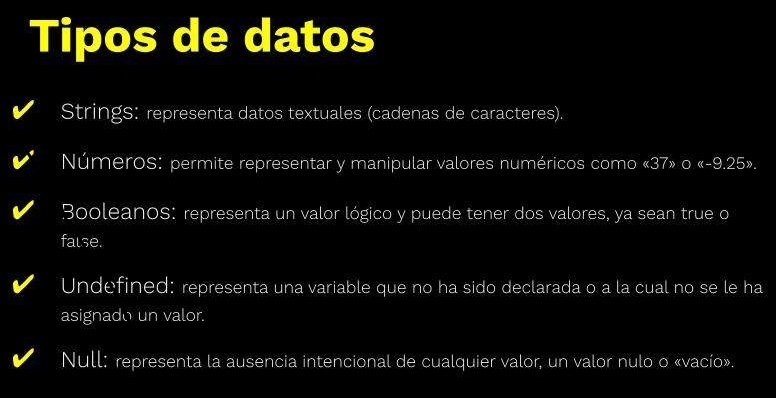
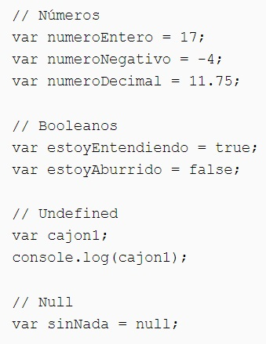
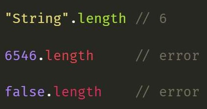

Tipos de datos en JavaScript
Tipado débil y tipado dinámico
En JavaScript el tipado es débil y dinámico. JavaScript es un lenguaje de programación que tiene tipado débil y dinámico, pero no tiene tipado inferido de manera nativa.
- Ventajas
- Mayor libertad para redireccionar el código en algún sentido más conveniente.
- Escribir menor cantidad de código.
- Desventaja
- El intérprete no muestra los errores de asignación.
Una de las formas más comunes de simular el tipado fuerte es mediante el uso de TypeScript, que es un superset de JavaScript que permite declarar tipos de datos. TypeScript agrega una capa adicional de verificación de tipos a JavaScript, lo que ayuda a prevenir errores antes de que ocurran.
Otra forma de simular el tipado fuerte en JavaScript es mediante el uso de convenciones de nomenclatura. Por ejemplo, es común que las variables que almacenan números comiencen con "num", mientras que las variables que almacenan cadenas de texto comiencen con "str". De esta manera, es más fácil entender qué tipo de dato está almacenado en cada variable y se puede prevenir la asignación accidental de un tipo de dato incorrecto.
Es importante escribir un código limpio y legible para evitar confusiones en el tipo de datos de las variables. Por ejemplo, si una variable se utiliza como un número en una sección del código y como una cadena de texto en otra, puede ser difícil mantener el control de su tipo de dato. Por lo tanto, es recomendable escribir código que sea coherente en el uso de las variables y en el tipo de datos que maneja.
A menudo se confunden los términos "tipado débil" y "tipado dinámico" pero en realidad son dos conceptos diferentes. El tipado débil significa que el lenguaje de programación permite la conversión implícita entre diferentes tipos de datos. Es decir, el lenguaje permite que un valor de un tipo de datos se convierta automáticamente a otro tipo de datos, incluso si esto puede provocar pérdida de información o resultados inesperados.
El tipado dinámico, por otro lado, significa que el tipo de datos de una variable se determina en tiempo de ejecución, y puede cambiar durante la ejecución del programa. En un lenguaje de programación con tipado dinámico, una variable puede contener un valor de un tipo de datos en un momento, y luego contener un valor de un tipo de datos diferente en otro momento. En JavaScript, se puede declarar una variable y asignarle un valor de tipo numérico, y luego asignarle un valor de tipo string sin necesidad de declarar el tipo de la variable.
El tipado débil permite la conversión implícita entre diferentes tipos de datos, mientras que el tipado dinámico permite que el tipo de datos de una variable se determine en tiempo de ejecución y pueda cambiar durante la ejecución del programa. Estos son conceptos diferentes, aunque a menudo se discuten juntos en el contexto de los lenguajes de programación.
Tipado inferido
El tipado inferido (o "inferencia de tipo") se refiere a un lenguaje de programación en el que el compilador o intérprete puede determinar automáticamente el tipo de datos de una variable basándose en el contexto en el que se utiliza. El compilador puede inferir el tipo de datos de una variable basándose en el valor inicial que se le asigna.
Aunque JavaScript no tiene tipado inferido de manera nativa, algunas herramientas y bibliotecas pueden proporcionar inferencia de tipos en JavaScript, como TypeScript o Flow. Estas herramientas utilizan una sintaxis adicional para especificar el tipo de una variable de manera explícita, y luego utilizan esa información para proporcionar inferencia de tipos en el código.
- Tipos primitivos
- Number: se utilizan para representar valores numéricos, tanto enteros como decimales. Ejemplos: 1, 2.5, -3.1416.
- String: se utilizan para representar secuencias o cadenas de caracteres. Las cadenas se escriben entre comillas simples o dobles. Ejemplos: "Hola mundo", 'JavaScript es genial'.
- Boolean: se utilizan para representar valores de verdad o falsedad. Solo pueden tener dos valores posibles: true (verdadero) o false (falso).
- Null: se utiliza para representar la ausencia intencional de cualquier objeto o valor. Null es un tipo de dato especial que tiene un solo valor: null. Asigna a la variable un espacio vacío en memoria. No guarda nada.
- Undefined: se utiliza para representar una variable que no tiene un valor asignado o una propiedad de un objeto que no existe. Undefined es un tipo de dato especial que tiene un solo valor: undefined. La variable no está asignada a ninguna parte de memoria. Suele ocurrir por algún error en el código. 
- Symbol: se utilizan para crear valores únicos que no son iguales a ningún otro valor. Los símbolos se utilizan principalmente como identificadores de propiedades de objetos.
- Objetos: Los objetos en JavaScript son una colección de datos y funciones. Se crean utilizando llaves {} y pueden contener propiedades y métodos. Pueden ser arreglos, listas, etc.
- Objeto String: proporciona métodos para trabajar con cadenas de caracteres, como length para obtener la longitud de la cadena, indexOf para buscar un substring dentro de la cadena, charAt para obtener el carácter en una posición determinada y muchos más.
- Objeto Number: proporciona métodos para trabajar con valores numéricos, como toFixed para redondear un número a un número determinado de decimales, toPrecision para redondear un número a un número determinado de cifras significativas y muchos más. El objeto Number no es necesario para trabajar con números en JavaScript. La mayoría de las operaciones matemáticas se pueden realizar directamente con el tipo de datos number.
- Objeto Boolean: proporciona el método toString para convertir un valor booleano en una cadena de caracteres.
Método length: Es un método que solo se puede aplicar al tipo de dato string (también lo podemos utilizar en arreglos). Si lo aplicamos en un número o en un booleano nos devuelve error.
Los tipos de datos primitivos se almacenan por valor y no por referencia. Cuando asignamos una variable de un tipo primitivo a otra variable, se copia el valor de la variable original en la nueva variable. Si cambiamos el valor de la nueva variable, el valor de la variable original no se ve afectado.
En JavaScript, hay varios objetos asociados a los tipos de datos primitivos. Estos objetos proporcionan propiedades y métodos útiles para trabajar con los valores de los tipos de datos primitivos.